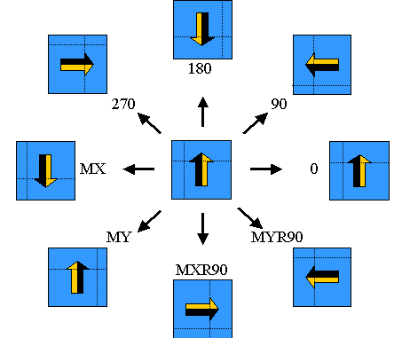
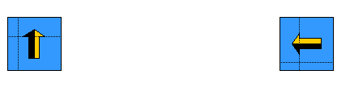

|
 |
 |
||||||
|
|
|
||||||
OpenAccess provides the oaTransform class to implement two-dimensional
transformations, including orientation (angle and mirroring information) and
translation (offset in X and Y directions). Transforms are used:
Note: OpenAccess only performs fundamental arithmetic computations when calculating new coordinate values. It does not check for overflow. If overflow occurs, it will be handled in the default manner by the OS.
An oaTransform object
can be constructed with both offset and orientation changes.
The following figure illustrates the results of transforming an object
using an oaTransform object set to various orientations. The orientations are set through the use of an oaOrient object, which is constructed with one of the oaOrientEnum values (listed in the figure below), and passed to the oaTransform. Rotations are about the 0,0 point of the design containing the object being
transformed.

The following figure shows the results of applying an
oaTransform with different
translation values. After translation, the center of the figure coincides with
the given offset point.

When multiple simple transforms are required on a single object, you can apply the transformations individually or concatenate the transforms, then apply them once on the object. Both methods produce the same result.
For example, you can translate a point with the coordinates (2, 3) to the coordinates (4, 5) by moving two units in the X direction and two units in the Y direction. You could then translate the point to the coordinates (6, 7), by moving two more units in the X direction and two more units in the Y direction. For a simpler operation with the same result, you could concatenate the transforms, moving the point four units in the X direction and four units in the Y direction in one transformation.
In general, oaTransform concatenation
is not commutative. That is, applying the transforms in a different order
may produce different results if either of the transforms involves an orientation
change. When a single transform contains both an orientation change and a translation,
the orientation change will be applied before the translation.
For example, given oaTransform objects
trans1, trans2 and result, the
following concatenation result is
equivalent to performing trans1 followed by performing
trans2.
trans1.concat(trans2, result)
In the next example, two transformations (one translation and one rotation)
are applied sequentially to the oaRect object.
oaTransform translation(1, 1); oaTransform rotation(oacR90); oaBox box(-5, -5 , 5, 5); oaRect *rect = oaRect::create(block, layer, purpose, box); rect->move(translation); rect->move(rotation);The result is the same when the two transforms are concatenated and then applied, as follows.
oaTransform intermediate; trans1.concat(rotation, intermediate); oaTransform result; intermediate.concat(result) rect->transform(result);
Transforms are commonly used to transform an object lower in a hierarchy to coordinates relative to a parent in the hierarchy.
One way to accomplish this type of hierarchical transformation is to descend through the hierarchy, concatenating transforms at each level, to create a transform that conceptually views an object in the current instance in the hierarchy as if it were at the top level. At each step in the hierarchy, the code should apply the transform of the instance it is currently stepping into, then apply the transform that will take the object to the top of the hierarchy.
For example:
inst->getTransform(instTrans); instTrans.concat(upperTrans, newTrans);
When you need to rotate an object around its center through an angle, you cannot directly apply a rotational transform. To achieve this result, you must:
(0, 0)For example, the following combined transform rotates a figure whose center is located at centerPt by an angle of 90 degrees.
oaTransform translation(-centerPt); oaTransform rotation(oacR90); oaTransform intermediate; translation.concat(rotation, intermediate); oaTransform invTranslation(centerPt); oaTransform result; intermediate.concat(invTranslation, result);
The value result holds the required transformation.
 |
||
| Original Figure | ------------> | Rotated About Its Center |
You can achieve the same result by applying the transforms sequentially on the object.
Note: If you rotate an object without first translating it from its original position, the resultant figure is rotated about the origin of the coordinate system, not the center of the figure, as shown below.
|  | ||
| Original Figure | ------------> | Rotated About Origin |
Return to Programmers Guide topics

Copyright © 2001-2010 Cadence Design Systems, Inc.
All rights reserved.